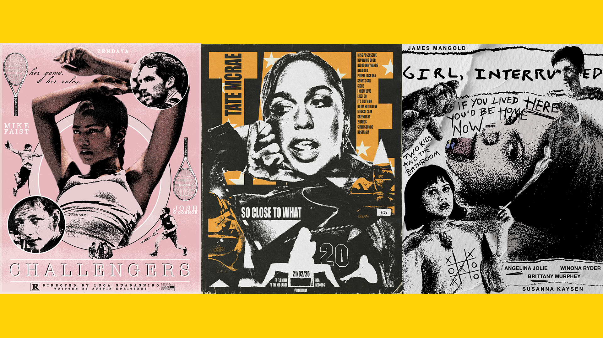

Anna Roman

My name is Anna Melitina Roman and I am a third-year Media Production student, freelance designer, and creative director at Hideout Records. During my time on this course, I have developed proficiency in the Adobe Suite, mainly Photoshop and Illustrator, which I use for graphic design work.
As my work focuses on graphic design, I explore branding, which is currently heavily influenced by music culture. Alongside my studies, I work as a freelance designer creating promotional graphics and visual identities for artists, which has helped me learn how to translate someone’s personality and style into visual work.
Through promotional materials such as posters and other digital graphics, I enjoy experimenting with typography, colour, and layout to create visuals that communicate a certain mood or identity, particularly for emerging artists. In previous projects, I have also explored mixed media approaches, combining digital imagery with more traditional elements.
I look forward to continue to developing my creative practice and expanding my work within graphic design, hopefully joining the MA Graphics Communication course at NTU this year!

 @rollthetapess
@rollthetapess
 @roll.the.tapes26
@roll.the.tapes26